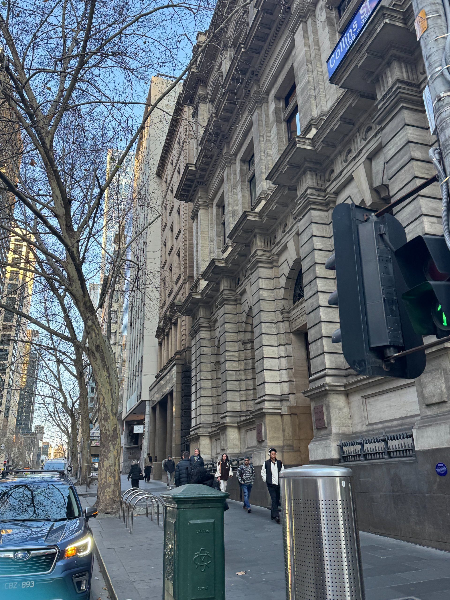

(English version see below.)
走在墨尔本八点半的街头，阳光透过电车轨道洒在道路两边的杏树和高楼大厦上，和他在一个多月前发给我的第一张上班路上的照片一模一样。
“明明有一百万种死法，你却奇迹般地活了下来”——
其实真正应该活下来的那个是我吧：
我才发现自己已经多么习惯用玩笑式的铠甲和比推理小说更缜密的研究来自保。用看似的无坚不摧与独立强大，让内心深处的种种被抛弃的恐惧蒙混过关。
我知道我是勇敢的，亦是幸运的，我只消告诉自己，我更是值得的。经过澳洲银行的那幢维多利亚风格的建筑的时候，我想起和塔塔在纽约排队去喝的那家抹茶咖啡，也是在一个小斜坡上，有着长条形的窗子，只是像美国的所有东西一样，不由自主地比澳洲或英联邦其他地方的都大上一号。也许是时差、工作的疲累与昼夜颠倒，这几日我仍觉得自己像在做梦，而今日是在把他送去办公室后的第一次长时间的分离。我这几日不断问自己，我是在做梦吗？我为什么会在这里？我竟然真的来到了这里。我看着手机里渐渐像雨后的青苔或蘑菇那样长出相册表面的合照——她究竟是谁？还是我吗？和以前的我又有什么不同？我想起之前有些亲近的人提起过我眼里的那份忧伤。如果有天我再次失去了，会作何感想？我又为什么会在这幢仿若十几年前梦核一般的大房子里，看着木质窗框外的夕阳，等一只我从未见过的红白头肥鸟儿，哀叹粉蓝紫色缘影的错过？
我看着澳洲银行那幢建筑，想起纽约苏荷区的那一个下午。我试想过住在纽约、住在伦敦、住在洛杉矶。后来觉得大都市高昂的房租兴许不适合我这种懒荡的人生，便收拾了一个二十八寸的行李箱，准备在巴尔干半岛和东南欧流浪，或是去探一探午夜的巴塞罗那。谁也没想到，我竟不痛不痒地来到了这里，一件厚衣服也没带便入驻了南半球冬天的人生。所以在看见澳洲银行的建筑、并想起初到纽约的那个下午的那一刻，我一边穿过马路，一边心想：你说，人生真的有宿命吗？
我在社媒上打下，“命运终会带你去到 你想去的地方”，又犹豫了一下，把“命运”删去，替代为“生活”。其实我想去的地方，从不是一个具体的墨尔本。谁会想到墨尔本呢。在南半球南太平洋的边缘，离南极的距离都比赤道或北领地达尔文近上几十公里。一个我自己都没想过会来的地方。在我印象里便是冷风吹，或如英属过的那些大城市一样，得体却亦不痛不痒。
我许是早有预感，如若要选择一座城市生活与无端定居，凭我这样挑挑拣拣的性格，注定是很难安顿的。而人生、时间长大与看似恢宏的意义，兴许仅是生长在一段与任何人或事共处的时光里。人总是在弥补上半辈子的缺憾的。而如今能暂且寻到一扇窗，供我安心绘画与阅读，便珍惜、依偎一番，仔细享受吧！
2026.7.28
于墨尔本中心区的咖啡馆

------------------------
Walking through the streets at half past eight, I watched the sunlight fall through the tramlines onto the apricot trees and skyscrapers on either side of the road. It looked exactly like the first photo he sent me on his way to work, more than a month ago.
“There are a million ways to die, and yet, miraculously, you survived”—
But perhaps I AM the one who should really be trying to survive.
Only now do I realise how accustomed I have become to protecting myself with an armour of jokes, and with investigations that are more meticulous than the plot of any detective novel. I make myself appear invulnerable, fiercely independent and strong, so that all those fears of abandonment buried deep inside me can slip past without anybody noticing.
I know that I am brave, and lucky too. I only need to tell myself that I am worthy, too.
As I passed the Victorian-style Bank of Australia building, it reminded me of the matcha café Tata and I queued for in New York. It, too, sat on a slight incline and had long rectangular windows—only, like everything in America, it seemed almost involuntarily one size larger than its counterparts in Australia or elsewhere in the Commonwealth.
Perhaps it is the jet lag, the exhaustion from work, or the inversion of day and night, but these past few days I have still felt as though I were dreaming. Today was the first time we had been apart since I dropped him off at the office. Over and over, I have asked myself: Am I dreaming? Why am I here? Have I really, actually arrived here.
I look at the photographs of us slowly sprouting across the surface of my album like moss or mushrooms after the rain. Who is she? Is she still me? And how is she different from the person I used to be?
I think of how some of the people once closest to me spoke of the sadness in my eyes. If one day I lost all of these, how would I feel? And why am I now sitting inside this house that feels like a dreamcore memory from more than a decade ago, watching the sunset through wooden window frames, waiting for a chubby red-and-white-headed bird that I have never seen before, lamenting the missing of those pink, blue and violet-edged shadows?
I looked at the bank building and remembered that afternoon in SoHo, New York. I had imagined living in New York, London, Los Angeles, or wherever. Later, I realized that the exorbitant rents of these metropolis might not suit a life as idle and drifting as mine. So I packed a twenty-eight-inch suitcase and prepared to wander through the Balkans and southeastern Europe, or perhaps go and see what Midnight Barcelona would look like.
No one expected that I would somehow arrive here almost without fanfare or feeling a thing, moving into a life in the Southern Hemisphere winter without having brought a single warm jacket. So when I saw the bank building and remembered that first afternoon in New York, I crossed the street thinking: tell me, do you think there really is such a thing as destiny?
On social media, I typed: “Destiny will eventually take you to the place you want to be.” Then I hesitated, deleted the word “destiny,” and replaced it with “life.”
The place I wanted to reach was never a specifically Melbourne. Who would have thought of Melbourne? A city on the edge of the South Pacific in the Southern Hemisphere, a few dozen kilometres closer to Antarctica than to either the equator or Darwin in the Northern Territory—a place I had never even imagined myself visiting in a short time. In my mind, Melbourne had always been somewhere cold and windy; decent and elegant, like all those cities once ruled by the British, but otherwise faintly uneventful.
Perhaps I had always sensed that if I ever had to choose a city in which to live and arbitrarily move into, someone as particular and forever-picking as me was destined to find settling nearly impossible.
And perhaps the vast sweep of life and time, and all that seemingly grand meaning amount to nothing more than what quietly grows during the time we spend alongside a person, a place, or a thing. We are always trying to make up for what the first half of our lives denied us.
And now, for the time being, I have found a window beside which I can draw and read in peace. So let me treasure it, lean against it for a while, and savour it carefully.
28 July 2026
At a café in Central Melbourne